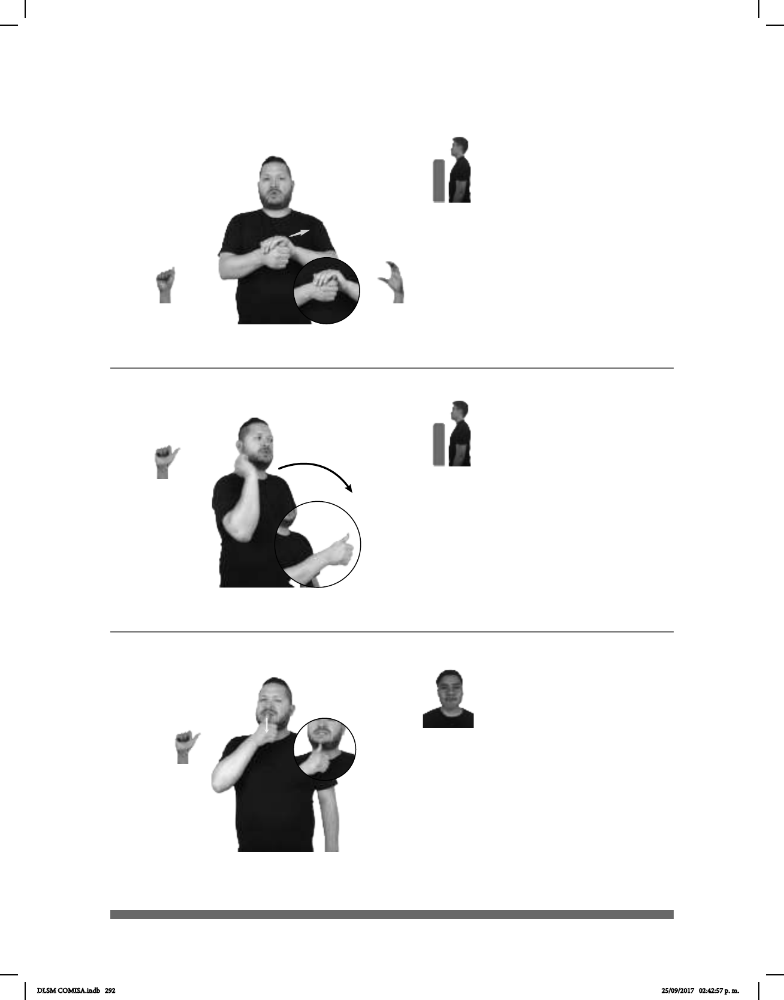

292
Seña: SB
MD A.5, MB C.1
MD palma hacia la izquierda.
MB palma oblicua hacia la derecha y hacia
abajo.
A la altura del pecho. MD
debajo de MB.
MD recto hacia el frente
repetidamente.
sust. f. Reptil acuático o
terrestre de diversos tamaños, de cuerpo
cubierto por una concha o coraza y
extremidades cortas.
(A-178)
PLAYA
allá
TORTUGA HABER
Hay una tortuga en la playa.
Seña: SM
A.1
Palma hacia la izquierda.
A la altura de la cara del
lado derecho.
La mano se mueve
formando un arco hacia el frente.
adv. Que se realiza por
cuenta propia, independientemente.
(A-179)
_
__________neg_
yo-AYUDAR-a-tí HACER TAREA TÚ MISMO
Seña: SM
A.1
Palma hacia adentro.
Sobre la barbilla.
Recto hacia abajo.
sust. f. Órgano sexual
femenino situado en la parte
inferior del tronco, entre la vejiga
y el recto, que se extiende desde la
(A-180)
MUJER
área
TENER VÁGINA
Las mujeres tienen vágina.
DLSM COMISA.indb 292 25/09/2017 02:42:57 p. m.